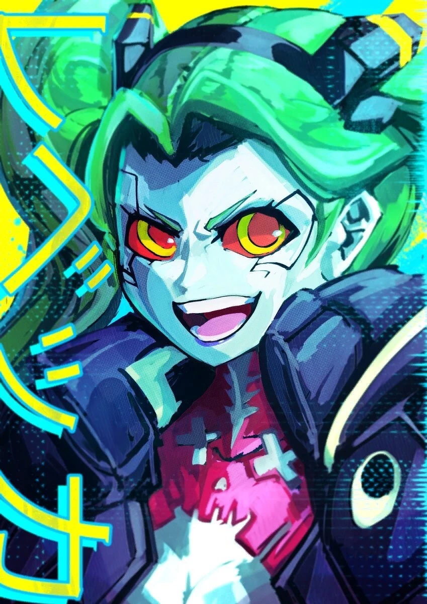

Дополнение Phantom Liberty для Cyberpunk 2077 вышло настолько отличным, что некоторые называли его лучшей игрой года. Если верить гейм-директору Габриэлю Аматанджело (Gabriel Amatangelo), команда может провернуть нечто подобное и с продолжением «Киберпанка». Об этом и многом другом специалист рассказал журналисту Game File Стивену Тотило (Stephen Totilo).
Доработка CP2077 и создание «Призрачной свободы»
Ребекка - один из ключевых персонажей аниме ответвления Киберпанка: Cyberpunk Edgerunners
||Предыстория Ви зависит от выбора игрока во время создания персонажа во вкладке «Прошлое Ви».
Также руководитель хотел ещё сильнее связать компоненты открытого мира между собой. В случае с DLC требовалось переплести разного рода заказы и побочные миссии с основной веткой квестов, которая в «Призрачной свободе» вертится вокруг биочипа. «Мы не хотели, чтобы между наёмником Ви и Ви, который возится с биочипом, появилось разграничение», — уточнил Аматанджело.
Вид на один из районов Найт-Сити
Восстание из мёртвых
© Да, мы закончили с Cyberpunk 2077. Но есть вероятность, что тут или там может появиться какая-нибудь мелочь просто потому, что кто-то ковыряется в игре и порой находит вещи, которые можно сделать легко или без особого риска. Или же если у сотрудников есть силы и время на это. Они приходят ко мне и я такой: «Ну ладно, я верю, что это не помешает другим задачам… Так что давайте попробуем».
Габриэль Аматанджело
Создание сиквела «Киберпанка»
- Во-первых, новый офис должен был находиться достаточно далеко от штаб-квартиры в Варшаве, чтобы избежать конкуренции за ценные кадры.
- Во-вторых, CDP хотела привлечь тех специалистов из Северной Америки, которые не были готовы переезжать в Европу.
- В-третьих, Бостон находится на восточном побережье США, благодаря чему время работы американского и польского офисов могут хоть немного пересекаться.
- В-четвёртых, тем сотрудникам CDP, что переезжали в новое место ради работы над Project Orion, говорили о схожести Бостона с европейскими городами в плане культуры.
По последним данным, Orion находится на этапе концептуализации. Игру делают на движке Unreal Engine 5.